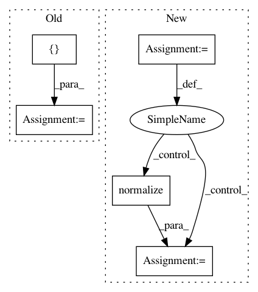

4287aef6a3a82436b4e3e156b22ede235eb4e6ba,texar/modules/decoders/transformer_decoders.py,TransformerDecoder,_build,#TransformerDecoder#Any#Any#,71
Before Change
dropout_rate = self._hparams.dropout,
causality = False,
scope = "vanilla_attention")
dec = layers.poswise_feedforward(dec,
num_units=[4*self._hparams.embedding.dim, self._hparams.embedding.dim])
self.dec = dec
//even if don"t use tf.variable_scope(self.variable_scope),
// the variables will appear in this scope automatically
self.logits = tf.layers.dense(dec, self._vocab_size)
After Change
dropout_rate = self._hparams.dropout,
causality = False,
scope = "vanilla_attention")
poswise_network = FeedForwardNetwork(
hparams=self._hparams["poswise_feedforward"])
with tf.variable_scope(poswise_network.variable_scope, reuse=True):
// why there could be "multihead_attention_1" scope
dec += poswise_network(dec)
dec = layers.normalize(dec)
self.dec = dec
self.logits = tf.layers.dense(dec, self._vocab_size)
self.preds = tf.to_int64(tf.argmax(self.logits, axis=-1))
In pattern: SUPERPATTERN
Frequency: 4
Non-data size: 5
Instances
Project Name: asyml/texar
Commit Name: 4287aef6a3a82436b4e3e156b22ede235eb4e6ba
Time: 2017-12-11
Author: shore@pku.edu.cn
File Name: texar/modules/decoders/transformer_decoders.py
Class Name: TransformerDecoder
Method Name: _build
Project Name: has2k1/plotnine
Commit Name: 7fe5355c5fbfa9bf85f0b0eb9523ff6f35f33788
Time: 2014-06-13
Author: jonas@ifany.org
File Name: ggplot/components/size.py
Class Name:
Method Name: assign_sizes
Project Name: has2k1/plotnine
Commit Name: 7fe5355c5fbfa9bf85f0b0eb9523ff6f35f33788
Time: 2014-06-13
Author: jonas@ifany.org
File Name: ggplot/components/alphas.py
Class Name:
Method Name: assign_alphas
Project Name: asyml/texar
Commit Name: 4287aef6a3a82436b4e3e156b22ede235eb4e6ba
Time: 2017-12-11
Author: shore@pku.edu.cn
File Name: texar/modules/encoders/transformer_encoders.py
Class Name: TransformerEncoder
Method Name: _build